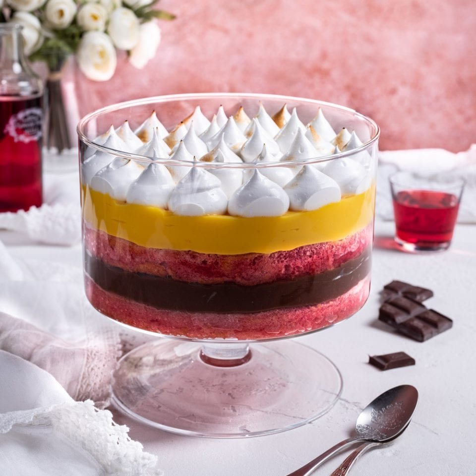

Zuppa Inglese

Description
zuppa inglese is one of the most popular spoon desserts in Italy.
A typical dessert from the region of Emilia Romagna, it has now become
one of the symbols of Italian confectionery, with several variations.
Preparing zuppa inglese is not at all difficult; by making the two bases
of which it is composed in good time, it will be very easy to assemble
it and serve it as a dessert on a special day! How can one resist this
spoon dessert composed, in our case, of layers of sponge cake soaked in
alchermes, on top of which a chocolate custard alternating with vanilla
cream is laid sweet and light. If you have all the necessary ingredients,
we are ready to start cooking zuppa inglese!
Ingredients
For an 18cm sponge cake
- Eggs ( 2 medium ), 110g
- Potato starch, 30g
- Salt, just a bit
- 00 FLour, 30g
- Sugar, 60g
- Vanilla pod, half
For vanilla cream
- Full milk, 400g
- Egg yolk from medium eggs, 4 ( about 72g )
- Sugar, 140g
- Dark chocolate, 50g
- Liquid fresh cream, 100g
- Cornstarch, 45g
- Vanilla pod, one
To garnish
- Alchermes, 100g
- unsweetened cocoa powder, q.s.
Steps
For an 18cm sponge cake
To prepare the zuppa inglese, start by making the sponge cake.
-
In a bowl, pour the eggs at room temperature and beat them with
a whisk while adding the salt, vanilla seeds and sugar a little at a time
-
Knead for about ten minutes or until the mixture becomes light and frothy:
you can also test this by letting the mixture make a mark as if it were writing
- Then place a sieve in the bowl and pour the flour and potato starch into it
- Incorporate the powders by making gentle movements from the bottom upwards and
ensuring that no residue remains at the bottom of the bowl
- Pour the dough into a previously buttered and floured 18 cm mould
- Level the surface and bake in a preheated oven in static mode at 160°
for about 40 minutes, placing the drip pan on the lowest shelf (not in contact with the base);
let cool and then unmould
Vanilla cream and composition
- Meanwhile, take care of the custard. Pour milk and cream into a saucepan
- Extract the vanilla seeds, keeping them aside, from the pod and pour the
latter into the saucepan. Heat, allowing it to come to the boil
- Meanwhile pour the vanilla pulp over the yolks
- Add sugar, whisk quickly and then sieve in the cornstarch
- Stir and at this point milk and cream should be hot, so discard the pod
- And pour a couple of ladles into the egg mixture to dilute it
- Then pour into the pan
- And stir with a whisk while cooking for a few minutes. As soon as the cream thickens,
you can turn off the flame
- Divide the cream into two bowls
- and into one pour the chocolate
- Take advantage of the fact that it
is still very hot to help you melt it,
then cover both creams with cling film and leave to cool
- Recover the ready and cooled sponge cake, use 70 g of it,
cut it into vertical slices 1 cm thick
- then trimmed so that the pieces can fit into 4 x 150 ml beakers
- Soak, not too much, the sponge cake with alchermes
- and proceed by first pouring a little chocolate cream
- and then the classic one
- Give it a few taps under the glass so that everything is evenly
distributed and then start again with the layers of soggy sponge cake
- and the two creams
- Level the surface with a spatula and repeat for all the other glasses.
Finally, place them in the refrigerator to firm up for at least a couple of hours
- Sprinkle your glasses of trifle with bitter cocoa before serving and enjoy!